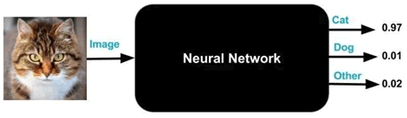
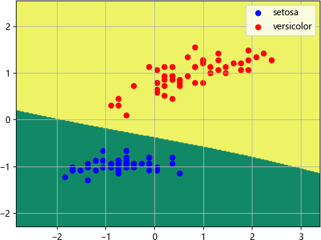

神经网络分类算法的应用及其实现
在深度学习大热的当下，神经网络算法是最知名、应用最为广泛的机器学习算法。可以毫不夸张地说，你所能接触到的人工智能产品，绝大部分都使用了神经网络算法，比如手机经常用到的刷脸解锁、美颜修图、照片中的人物识别等，都是基于神经网络分类算法实现的。
由于神经网络算法的这一特性，导致一些场景并不适合使用神经网络算法，比如银行不会使用神经网络算法来评判用户的是否具备信用，因为一旦出现预测错误，银行根本无法溯源找到评判错误的原因，也就无法向客户做出合理的解释。
比如人脸识别，需要各种姿态样式的人脸，发怒的、喜悦的、悲伤的、戴眼镜的、模糊的等等，总之越多越好。海量数据集对于训练一个优秀的神经网络模型非常重要，神经网络获得数据越多，表现能力就越好，这样训练出来的模型才具有更好的泛化能力。
进入 21 世纪以后，计算机的硬件性能获得了飞速发展，这为神经网络的发展创造了有利的外部环境。
2017 年 5 月，围棋高手 AlphaGo 机器人，从空白状态学起，自我训练 3 天，对弈 490 万次，便打败了人类第一围棋高手柯洁。AlphaGo Zero 作为 AlphaGo 的进阶版，它自我训练 40 天，对弈 2900 万次，最终以 100：0 的战绩，打败了它的前辈 AlphaGo 机器人。而这些数据的背后，是强大算力作为支撑。
同时神经网络模型搭建过程较为复杂，激活函数的选择，权值的调节，都是一个比较费时的过程，因此其开发周期相对较长。总之，神经网络算法是一种成本较高的算法，这也决定了它能够解决比传统机器学习算法更为复杂的问题。下表对神经网络的特点做了简单的总结：
下面使用神经网络分类算法解决鸢尾花的分类问题。在这之前有必要先了解 neural_network.MLPClassifier 分类器常用参数，如下所示：
Iris 鸢尾花数据集内包含 3 个类别，分别是山鸢花（Iris-setosa）、变色鸢尾（Iris-versicolor）和维吉尼亚鸢尾（Iris-virginica）共150 条记录，每一个类别有 50 条数据，每条记录有 4 项特征（单位为厘米）：
我们选取两个类别（0 和 1，即山鸢尾花和变色鸢尾花）的样本标记值和两个特征属性（'sepal length (cm)', 'petal length (cm)'），之后使用神经网络分类算法对数据集中的 0 和 1 两类鸢尾花进行正确分类。代码如下所示：
以上就是神经网络算法的实际应用，可以看出神经网络虽然复杂，但训练出的模型预测正确率高，这是传统的机器学习算法所不能相比的。神经网络算法适合处理大规模的数据分析任务，不管是分类还是回归任务，都有着十分优秀的表现力。
神经网络算法特点
我们知道，深度学习的本质就是神经网络算法（深度学习是神经网络算法的一个分支）。理论上来说，在数据量和隐藏层足够多的情况下，神经网络算法能够拟合任何方程（函数）。神经网络算法是一种具有网络结构的算法模型，这决定了它具有非常好的延展性，通过调节神经网络中各个节点的权值参数使得分类效果明显提升。总的来说，神经网络算法具有以下特点：1) 黑盒算法
神经网络算法，也被称为“黑盒算法”，这是因为人们无法从外部得知神经网络模型究竟是如何完成训练的，比如使用一个预测准确率为 97% 的猫脸识别模型，有时会将小狗的脸部照片归纳到小猫中，而这种情况是无法解释的，因此神经网络算法又被人们形象地称之为“黑盒算法”。

图1：黑盒算法
图1：黑盒算法
由于神经网络算法的这一特性，导致一些场景并不适合使用神经网络算法，比如银行不会使用神经网络算法来评判用户的是否具备信用，因为一旦出现预测错误，银行根本无法溯源找到评判错误的原因，也就无法向客户做出合理的解释。
2) 数据量
在互联网并不发达的七八十年代，数据量不足是阻碍神经网络发展的一大因素。与传统的机器学习算法相比，要想训练一个优秀的神经网络模型，往往需要更多的数据（至少需要数千甚至数百万个标记样本）。比如人脸识别，需要各种姿态样式的人脸，发怒的、喜悦的、悲伤的、戴眼镜的、模糊的等等，总之越多越好。海量数据集对于训练一个优秀的神经网络模型非常重要，神经网络获得数据越多，表现能力就越好，这样训练出来的模型才具有更好的泛化能力。
注意：经过长达几十年的积累，直到目前，已经有大量的公开数据集可以使用，比如 Kaggle 数据集、Amazon 数据集、UCI 机器学习资源库、微软数据集等等。
3) 算力和开发成本高
在计算方面，比传统算法下相比，神经网络算法要耗费更多的计算机资源，对于复杂的深度学习模型来说，若想训练出一个优秀的模型，甚至需要几周的时间。但以 20 世纪七八十年代的计算机硬件水平，想要实现如此大规模的计算，几乎是不可能的。因此计算机的硬件性能也是影响神经网络发展的因素之一。进入 21 世纪以后，计算机的硬件性能获得了飞速发展，这为神经网络的发展创造了有利的外部环境。
2017 年 5 月，围棋高手 AlphaGo 机器人，从空白状态学起，自我训练 3 天，对弈 490 万次，便打败了人类第一围棋高手柯洁。AlphaGo Zero 作为 AlphaGo 的进阶版，它自我训练 40 天，对弈 2900 万次，最终以 100：0 的战绩，打败了它的前辈 AlphaGo 机器人。而这些数据的背后，是强大算力作为支撑。
同时神经网络模型搭建过程较为复杂，激活函数的选择，权值的调节，都是一个比较费时的过程，因此其开发周期相对较长。总之，神经网络算法是一种成本较高的算法，这也决定了它能够解决比传统机器学习算法更为复杂的问题。下表对神经网络的特点做了简单的总结：
| 项目 | 说明 |
|---|---|
| 优点 | 网络结构延展性好，能够拟合复杂的数据分布，比如非线性函数，通过调节权值参数来获取泛化能力较强的模型。 |
| 缺点 | 可解释性差，调参依赖于经验，可能会陷入局部最优解，或者梯度消失、梯度爆炸等问题。 |
| 应用领域 | 神经网络算法拟合能力强，应用领域广，比如文本分类等，而深度学习作为神经网络的分支，也是当前最为热门研究方向，在图像处理、语言识别和自然语言处理等多个领域都有着非常突出的表现。 |
神经网络算法应用
讲了这么多有关神将网络的相关知识，一切的都是为了解决实际的问题，那应该如何在编程中使用它呢？Python 机器学习 Sklearn 库提供了多层感知器算法（Multilayer Perceptron，即 MLP），也就是我们所说的神经网络算法，它被封装在 sklearn.neural_network 包中，该包提供了三个神经网络算法 API，分别是：- neural_network.BernoulliRBM，伯努利受限玻尔兹曼机算法，无监督学习算法；
- neural_network.MLPClassifier，神经网络分类算法，用于解决分类问题；
- neural_network.MLPRgression，神经网络回归算法，用于解决回归问题。
下面使用神经网络分类算法解决鸢尾花的分类问题。在这之前有必要先了解 neural_network.MLPClassifier 分类器常用参数，如下所示：
| 名称 | 说明 |
|---|---|
| hidden_layer_sizes | 元组或列表参数，序列内元素的数量表示有多少个隐藏层，每个元素的数值表示该层有多少个神经元节点，比如(10,10)，表示两个隐藏层，每层10个神经元节点。 |
| activation | 隐藏层激活函数，参数值有 identity、logistic、tanh、relu，默认为 'relu' 即线性整流函数（校正非线性） |
| solver | 权重优化算法，lbfgs、sgd、adam，其中 lbfg 鲁棒性较好，但在大型模型或者大型数据集上花费的调优时间会较长，adam 大多数效果都不错，但对数据的缩放相当敏感，sgd 则不常用 |
| alpha | L2 正则项参数，比如 alpha = 0.0001（弱正则化） |
| learning_rate | 学习率，参数值 constant、invscaling、adaptive |
| learning_rate_init | 初始学习率，只有当 solver 为 sgd 或 adam 时才使用。 |
| max_iter | 最大迭代次数 |
| shuffle | 是否在每次迭代时对样本进行清洗，当 solver 参数值为 sgd 或 adam 时才使用该参数值 |
| random_state | 随机数种子 |
| tol | 优化算法中止的条件，当迭代先后的函数差值小于等于 tol 时就中止 |
Iris 鸢尾花数据集内包含 3 个类别，分别是山鸢花（Iris-setosa）、变色鸢尾（Iris-versicolor）和维吉尼亚鸢尾（Iris-virginica）共150 条记录，每一个类别有 50 条数据，每条记录有 4 项特征（单位为厘米）：
- sepallength：萼片长度
- sepalwidth：萼片宽度
- petallength：花瓣长度
- petalwidth：花瓣宽度
我们选取两个类别（0 和 1，即山鸢尾花和变色鸢尾花）的样本标记值和两个特征属性（'sepal length (cm)', 'petal length (cm)'），之后使用神经网络分类算法对数据集中的 0 和 1 两类鸢尾花进行正确分类。代码如下所示：
import pandas as pd
import numpy as np
import matplotlib.pyplot as plt
from sklearn import datasets
from sklearn.preprocessing import StandardScaler
from sklearn.model_selection import train_test_split
from sklearn.neural_network import MLPClassifier
def main():
iris = datasets.load_iris() # 加载鸢尾花数据集
# 用pandas处理数据集
data = pd.DataFrame(iris.data, columns=iris.feature_names)
print(iris.feature_names)
#数据集标记值 iris.target
data['class'] = iris.target
# 此处只取两类 0/1 两个类别的鸢尾花，设置类别不等于 2
data = data[data['class'] != 2]
# 对数据集进行归一化和标准化处理
scaler = StandardScaler()
# 选择两个特征值（属性）
X = data[['sepal length (cm)', 'petal length (cm)']]
#计算均值和标准差
scaler.fit(X)
# 标准化数据集（数据转化）
X = scaler.transform(X)
# 'class'为列标签，读取100个样本的的列表
Y = data[['class']]
# 划分数据集
X_train, X_test, Y_train, Y_test = train_test_split(X, Y)
# 创建神经网络分类器
mpl = MLPClassifier(solver='lbfgs', activation='logistic')
# 训练神经网络模型
mpl.fit(X_train, Y_train)
# 打印模型预测评分
print('Score:\n', mpl.score(X_test, Y_test))
# 划分网格区域
h = 0.02
x_min, x_max = X[:, 0].min() - 1, X[:, 0].max() + 1
y_min, y_max = X[:, 1].min() - 1, X[:, 1].max() + 1
xx, yy = np.meshgrid(np.arange(x_min, x_max, h),np.arange(y_min, y_max, h))
Z = mpl.predict(np.c_[xx.ravel(), yy.ravel()])
Z = Z.reshape(xx.shape)
#画三维等高线图，并对轮廓线进行填充
plt.contourf(xx, yy, Z,cmap='summer')
# 绘制散点图
class1_x = X[Y['class'] == 0, 0]
class1_y = X[Y['class'] == 0, 1]
l1 = plt.scatter(class1_x, class1_y, color='b', label=iris.target_names[0])
class2_x = X[Y['class'] == 1, 0]
class2_y = X[Y['class'] == 1, 1]
l2 = plt.scatter(class2_x, class2_y, color='r', label=iris.target_names[1])
plt.legend(handles=[l1, l2], loc='best')
plt.grid(True)
plt.show()
main()
模型评分为 1.0，即模型预测正确率为 100%，输出效果图如下：

图2：分类效果图
图2：分类效果图
以上就是神经网络算法的实际应用，可以看出神经网络虽然复杂，但训练出的模型预测正确率高，这是传统的机器学习算法所不能相比的。神经网络算法适合处理大规模的数据分析任务，不管是分类还是回归任务，都有着十分优秀的表现力。
关注公众号「站长严长生」，在手机上阅读所有教程，随时随地都能学习。内含一款搜索神器，免费下载全网书籍和视频。

微信扫码关注公众号